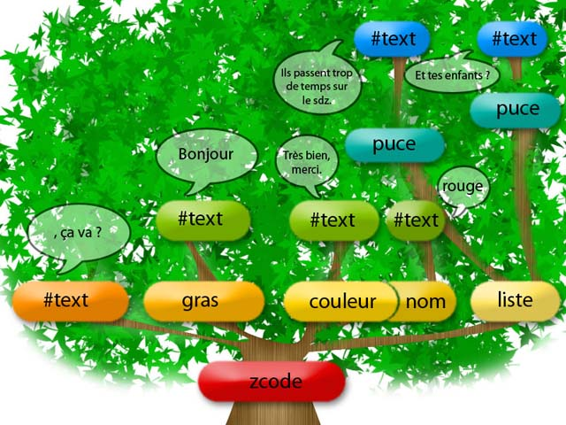
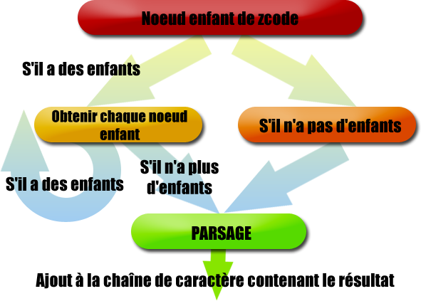
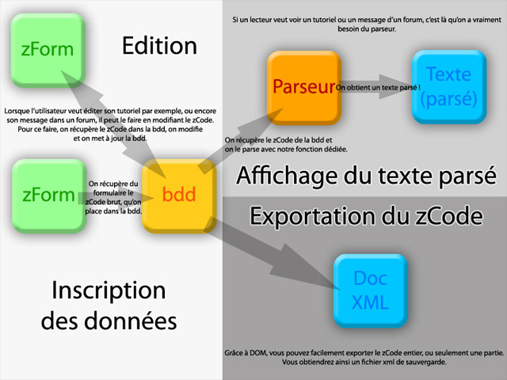

Si vous vous demandez ce qu'est un parseur (ou « parser ») XML, à quoi cela peut bien servir ou encore comment élaborer un langage comme le zCode, ce tutoriel est fait pour vous. ^^
Nous aborderons ensemble les bases du parsage en XML à travers la mise en place d'un système de parsage pour le zCode ! Mais je vous sens intrigués, pleins de fougue et d'entrain : entrons donc sans plus tarder dans le vif du sujet. ;)
Si vous avez lu les chapitres concernant les Regex, vous avez codé un parseur pour le bbcode. En réalité, un parseur XML fait exactement la même chose, à la différence près que le langage à parser est fondé sur du XML. Le parseur est chargé de traduire le code XML en XHTML : il s'agit donc d'un script PHP qui va réaliser cette transformation.
Pourquoi XML ?
En plus des avantages du parsage en général, un parseur XML offre son (gros) lot d'avantages. En effet, grâce à l'API DOM intégré à PHP5, on peut non seulement élaborer très facilement un parseur, mais aussi gérer des fonctionnalités plus poussées de ce langage. :) Voici une liste non exhaustive des atouts de DOM par rapport aux Regex :
plus « subtil » ;
plus complet ;
permet de gérer des fichiers XML (sauvegarde, ouverture, fermeture).
La seule contrainte de DOM est qu'il faut respecter les règles élémentaires du XML (balises entre chevrons, etc.).
Dites, ça ne vous fait pas penser à un langage existant, ce genre de système ? :-° Mais si ! Le zCode ! Effectivement, le zCode utilise DOM et le XML pour parser ses messages (consultez cette page pour en avoir la confirmation). Au final, votre langage ressemblera peut-être au zCode. Nous nous fonderons sur ce dernier pour illustrer l'utilisation de DOM.
J'utiliserai des balises spécifiques au zCode. Pour nos visiteurs qui ne seraient pas encore familiers avec ce langage, voici (« Encore ? », me direz-vous) un peu de lecture.
L'objectif est de vous initier à DOM en parsant une balise < gras> . Ce n'est peut-être pas encore le nirvana, mais il s'agit d'un passage nécessaire avant de réaliser dans la prochaine partie un parseur digne de ce nom.
Chargeons le XML
Comment charger du XML pour l'utiliser dans DOM ? C'est ce que nous allons voir.
La notion d'arbre XML
Ce terme désigne l'arborescence d'un langage XML, c'est-à-dire l'enchaînement de nœuds qui s'imbriquent les uns dans les autres. DOM se sert de cet arbre pour fonctionner : on dit qu'il adopte un fonctionnement hiérarchique. Ci-dessous, un exemple d'arbre XML.
<?xml version="1.0" encoding="ISO-8859-1"?>
<zcode>
<gras>Bonjour</gras>, ça va ?
<couleur nom="rouge">Très bien, merci.</couleur>
<liste>
<puce>Et tes enfants ?</puce>
<puce>Ils passent trop de temps sur le SdZ. :)</puce>
</liste>
</zcode>
Récupérer du contenu XML
Nous allons voir comment récupérer cet arbre avec DOM. Cette étape est indispensable.
On commence par initialiser deux éléments : le premier est le document XML chargé par DOM, le second est la chaîne de caractères qui va contenir le code XHTML à afficher (cet élément est facultatif).
<?php
$document_xml = new DomDocument(); // Instanciation de la classe DomDocument : création d'un nouvel objet
$resultat_html = ''; // Initialisation de la chaîne qui contient le résultat
?>
On voit que le premier type de classe que nous utilisons est DomDocument : il s'agit d'un document DOM . ;) Pour l'instant, $document_xml est vide : il faut donc le remplir avec du XML. On peut le faire de deux manières.
Imaginons que vous ayez un fichier zcode.xml dans le même dossier que votre script ; il vous faut l'ouvrir avec DOM. Pour cela, on utilise la méthode load (c'est une méthode DomDocument, bien entendu).
<?php
$document_xml->load('zcode.xml'); // Chargement à partir de zcode.xml
?>
Vous remarquez que l'on obtient la méthode load grâce à « -> » : il en sera de même pour les variables d'un objet.
On peut faire la même chose à partir d'une chaîne de caractères tout à fait banale.
<?php
$chaine_xml = '<?xml version="1.0" encoding="ISO-8859-1"? >
<zcode><gras>Bonjour</gras>, ça va ?
<couleur nom="rouge">Très bien, merci.</couleur>
<liste>
<puce>Et tes enfants ?</puce>
<puce>Ils passent trop de temps sur le SdZ. :)</puce>
</liste>
</zcode>'; // Chaîne de caractères contenant le texte XML à parser.
$document_xml->loadXML($chaine_xml); // On charge du XML à partir de $chaine_xml.
?>
Vous pouvez aussi sauvegarder une chaîne de caractères XML dans un fichier.
Nous avons chargé le XML : comment récupérer les balises afin de les parser ?
La notion de nœud
Un nœud est un élément de l'arbre XML. Dans notre exemple, on peut distinguer les nœuds zcode, gras, couleur, liste, nom, etc.
Un nœud peut donc être :
un ensemble de balises qui vont par paires (<zcode></zcode> ) ;
un contenu textuel (à l'intérieur de balises < gras></ gras> , par exemple) ;
l'attribut d'une balise (son nom) ;
la valeur de l'attribut (entre guillemets).
Quand on parle du nœud zcode, on parle de tout ce qui se trouve entre <zcode> et </zcode> :
<gras>Bonjour</gras>, ça va ?
<couleur nom="rouge">Très bien, merci.</couleur>
<liste>
<puce>Et tes enfants ?</puce>
<puce>Ils passent trop de temps sur le SdZ. :)</puce>
</liste>
Le nœud gras, quant à lui, contient :
Bonjour
On distingue différentes catégories de nœuds, définies selon leur organisation.
Nœud racine : c'est celui qui englobe le contenu du fichier XML. Ici, il s'agit de zcode. Il ne peut y avoir qu'un nœud racine par document.
Nœud parent : on parle du nœud qui englobe le nœud dont on parle. Pour nous, le nœud parent de puce est liste, celui de liste est zcode. Notez bien que nom a pour nœud parent couleur.
Nœud associé : on utilise ce terme pour désigner les attributs. Le nœud associé de couleur est nom. En revanche, liste n'a pas de nœud associé.
Nœud enfant : on veut parler des nœuds compris dans le nœud dont on parle. Par exemple, le nœud enfant de liste est puce. Notez que le nœud enfant de nom est rouge : cela désigne aussi les valeurs des attributs.
On peut également les distinguer selon leur type (nœud textuel, attribut, etc).
DOM : un véritable sac de nœuds
DOM repose entièrement sur les nœuds, et vous serez inexorablement amenés à les utiliser. DOM « découpe les nœuds » et les trie selon leur position dans l'arbre XML.
Nom du nœud
Caractéristiques du nœud
Contenu du nœud
puce (no 2)
Nœud enfant de liste et de zcode. A pour enfant un nœud #text invisible contenant le vrai texte.
Ils passent trop de temps sur le SdZ. :)
puce (no 1)
Nœud enfant de liste et de zcode. A pour enfant un nœud #text invisible contenant le vrai texte.
Et tes enfants ?
liste
Nœud enfant de zcode. Nœud parent de puce.
<puce>Et tes enfants ?</puce>
<puce>Ils passent trop de temps sur le SdZ. :)</puce>
nom
Nœud enfant de couleur. A pour enfant un nœud #text invisible contenant le vrai texte.
<police nom="courrier">rouge</police>
couleur
Nœud enfant de zcode. A pour enfant un nœud #text invisible contenant le vrai texte.
Très bien, merci.
Texte (sans nœud particulier)
Nœud enfant de zcode. A pour enfant un nœud #text invisible contenant le vrai texte.
, ça va ?
gras
Nœud enfant de zcode. A pour enfant un nœud #text invisible contenant le vrai texte.
Bonjour
zcode
Nœud racine.
<gras>Bonjour</gras>, ça va ?
<couleur nom="rouge">Très bien, merci.</couleur>
<liste>
<puce>Et tes enfants ?</puce>
<puce>Ils passent trop de temps sur le sdz :)</puce>
</liste>
Vous voyez que DOM décompose l'arbre XML en détaillant beaucoup. Tout ce qu'il nous reste à faire, c'est exploiter cette décomposition intelligemment. On peut également représenter une interprétation DOM sous la forme d'un arbre :

Un document XML selon DOM
Vous comprenez à présent les appellations « arbre » et « nœud » : les programmeurs filent souvent la métaphore. ^^
Nous utilisons getElementsByTagName, ce qui signifie obtenirElementsParNomDeBalise. On récupère ainsi le nœud zcode (il n'y en a qu'un car c'est le nœud racine).
Cette méthode retourne un objet de type DomNodeList. C'est une classe qui a pour caractéristique de lister des nœuds.
Pour récupérer des éléments d'une instance de DomNodeList, vous devez utiliser la méthode item. Exemple :
Les DomNodeList sont composées d'objets de type DomNode. DomNode est une classe qui représente un nœud. Si, par exemple, vous récupériez les nœuds puce, vous pourriez les obtenir avec foreach.
<?php
foreach($elements as $element)
{
// Effectuez les opérations sur $element
}
?>
Mais nous ne ferons pas comme cela, pour la simple et bonne raison qu'avec cette méthode, on parse par nom de balise, mais pas dans l'ordre du texte. o_O Essayez, vous verrez ! Nous récupérerons donc zcode avec item, car comme il n'y a qu'un nœud zcode, il est forcément le premier (et le seul) élément de la liste.
<?php
$element = $elements->item(0); // On obtient le nœud zcode
$enfants = $element->childNodes; // On récupère les nœuds enfants de zcode avec childNodes
?>
ChildNodes est une variable d'instance contenant les enfants de zcode sous forme d'une liste DOMNodeList. Le reste coule de source : nous allons prendre chaque nœud enfant séparément, l'analyser et le parser en fonction du type de nœud rencontré. Pour ce faire, je dois préciser que DomNode dispose de deux variables qui contiennent respectivement le nom du nœud et son contenu : ce sont nodeName et nodeValue. De plus, chaque élément de texte « banal » s'appelle #text.
<?php
$element = $elements->item(0); // On obtient le nœud zcode
$enfants = $element->childNodes; // On récupère les nœuds enfants de zcode avec childNodes
foreach($enfants as $enfant) // On prend chaque nœud enfant séparément
{
$nom = $enfant->nodeName; // On prend le nom de chaque nœud
if ($nom == 'gras')
{
$resultat_html .= '<strong>'.$enfant->nodeValue.'</strong>';
}
elseif($nom == '#text')
{
$resultat_html .= $enfant->nodeValue;
}
else
{
$resultat_html .= $enfant->nodeValue;
}
} ?>
Nous avons réalisé quelque chose d'assez complexe, il faut bien le dire. Mais c'est maintenant que le vrai travail commence ! :o
C'est bien beau de pouvoir mettre en gras votre texte, mais ce n'est pas cela qui va nous faire avancer ; l'exemple précédent avait seulement pour objectif de vous faire assimiler la technique de base. Qu'attendons-nous pour passer à la vitesse supérieure, que diable ? :p C'est à partir de maintenant que cela devient très intéressant.
Une véritable stratégie
Décrivons d'abord le principe de base de notre parseur.

Principe de notre parseur xml
Vous saisissez l'idée principale, non ? En fait, ce système permet :
de parcourir tout l'arbre XML dans l'ordre de lecture, et ce quel que soit le nombre d'enfants ou de ramifications ;
de ne parser que des nœuds dont le contenu a déjà été traité, pour éviter « d'oublier » des nœuds.
Ce système se fonde sur trois fonctions principales.
Les fonctions
parsage($nom_document)
Dans un premier temps, on récupère tous les éléments enfants directs du nœud racine zcode. Là, c'est très simple : nous savons que zcode contient forcément des enfants, ou alors c'est que vous n'avez strictement rien mis entre <zcode> et </zcode> . Partant de ce principe, nous allons envoyer zcode vers la fonction parsage_enfant, qui se charge de parcourir l'arbre XML.
Cette fonction est primordiale : c'est en fait la seule « vraie » fonction de parsage ( :D ) , car c'est la seule qui va vraiment remplacer les balises zcode en HTML. Cette fonction renvoie invariablement un nœud parsé.
Nous allons dresser trois tableaux : le premier pour les balises ouvrantes (<strong> , <span couleur="$1"> , etc), le deuxième pour les balises fermantes (</strong> , </span> , </div> , etc), le troisième pour les attributs qui correspondent à une balise (<couleur> => nom, <taille> => valeur, etc.). On utilisera str_replace pour placer les attributs dans la première balise ($1 pour le premier attribut, $2 pour le second). On devra également prendre en compte la balise <image/> qui fonctionne un peu différemment.
Je dois également mentionner le cas où nous devrons parfois parser une balise dont le contenu a déjà été parsé par d'autres fonctions. Dans ce cas, nous voulons récupérer le code HTML déjà créé et parsé. Nous devons donc ajouter une seconde variable de fonction ($contenu_a_inserer) pour parer à cette éventualité.
Enfin, nous allons nous occuper des attributs. Pour récupérer l'attribut d'un nœud (de classe DomNode), on récupère la variable attributes qui est de type DomNameNodeMap. Pour obtenir un attribut sous forme de nœud (DomNode), on utilise la méthode getNamedItem($nom_de_lattribut). Je vous recommande également de vous servir de la méthode hasAttributes sur un nœud pour savoir s'il contient des attributs. Elle renvoie true s'il y en a et false s'il n'y en a pas.
Ultime précision : les dernières lignes concernent le saut de ligne. Je l'ai empêché à l'intérieur des <li> et autres <ul> pour éviter quelques bugs. :)
<?php
function parsage_normal($noeud, $contenu_a_inserer='')
{
$balise_1 = array('gras' => '<strong>',
'italique' => '<span class="italique">',
'position' => '<div class="$1">',
'flottant' => '<div class="flot_$1">',
'taille' => '<span class="$1">',
'couleur' => '<span class="$1">',
'police' => '<span class="$1">',
'attention' => '<span class="rmq $1">',
'liste' => '<ul>',
'puce' => '<li>',
'lien' => '<a href="$1">',
'image' => '<img src="$1" alt="$2" />',
'citation' => '<span class="citation">',
'#text' => ''); // Tableau des balises ouvrantes
$balise_2 = array('gras' => '</strong>',
'italique' => '</span>',
'position' => '</div>',
'flottant' => '</div>',
'taille' => '</span>',
'couleur' => '</span>',
'police' => '</span>',
'attention' => '</span>',
'information' => '</span>',
'liste' => '</ul>',
'puce' => '</li>',
'lien' => '</a>',
'image' => '',
'citation' => '</span>',
'#text' => ''); // Tableau des balises fermantes
$attributs = array('position' => 'valeur',
'flottant' => 'valeur',
'taille' => 'valeur',
'couleur' => 'nom',
'police' => 'nom',
'lien' => 'url',
'image' => 'legende',
'citation' => 'auteur'); // Tableau des attributs
$nom = $noeud->nodeName; // On récupère le nom du nœud
if(!empty($contenu_a_inserer)) // On détermine si on veut spécifier du contenu préparsé
{
$contenu = $contenu_a_inserer; // Si c'est le cas, on met la variable de fonction en contenu
}
else
{
$contenu = $noeud->nodeValue; // Sinon, le contenu du nœud
}
$premiere_balise = $balise_1[$nom]; // Première balise (ouvrante)
if($noeud->hasAttributes() and $nom != 'image') // On remplace les attributs (sauf pour les images)
{
$un = $noeud->attributes->getNamedItem($attributs[$nom])->nodeValue; // Récupération de la valeur de l'attribut
$premiere_balise = str_replace("$1", $un, $premiere_balise); // On remplace la valeur $1 par celle de l'attribut
}
if($nom == 'image') // Cas particulier des images
{
$un = $contenu; // Dans ce cas, c'est $1 qui récupère le contenu du nœud (l'URL de l'image).
$premiere_balise = str_replace("$1", $un, $premiere_balise);
if($noeud->hasAttributes()) // Si l'image contient une légende (attribut $2)
{
$deux = $noeud->attributes->getNamedItem('legende')->nodeValue; // Récupération de l'attribut « legende »
}
else // Par défaut, la légende (alt) est « Image »
{
$deux = 'Image';
}
$premiere_balise = str_replace("$2", $deux, $premiere_balise);
$intermediaire = $premiere_balise;
}
else // Cas général
{
$intermediaire = $premiere_balise . $contenu . $balise_2[$nom]; // On assemble le tout
if($nom == 'liste' or $nom == 'puce')
{
$intermediaire = preg_replace("#<ul>(\s)*<li>#sU", "<ul><li>", $intermediaire);
$intermediaire = preg_replace("#</li>(\s)*<li>#sU", "</li><li>", $intermediaire);
$intermediaire = preg_replace("#</li>(\s)*</ul>#sU", "</li></ul>", $intermediaire);
}
if($nom == 'zcode')
{
$intermediaire = nl2br($intermediaire); // On saute des lignes au résultat final
}
}
return $intermediaire; // On renvoie le texte parsé
}
?>
Et voilà une bonne chose de faite ! :D
parsage_enfant($noeud)
Dans cette fonction, on va distinguer les nœuds possédant des enfants de ceux qui n'en possèdent pas. Ceux qui en ont vont vers parsage_normal tandis que ceux qui contiennent des éléments enfants sont redirigés vers… parsage_enfant lui-même ! Vicieux, non ? ;) De cette manière, on parcourt l'arbre XML jusqu'à ce que l'on atteigne les branches les plus éloignées, en quelque sorte.
<?php
function parsage_enfant($noeud)// Fonction de parsage d'enfants
{
if(!isset($accumulation)) // Si c'est la première balise, on initialise $accumulation
{
$accumulation = '';
}
$enfants_niv1 = $noeud->childNodes; // Les enfants du nœud traité
foreach($enfants_niv1 as $enfant) // Pour chaque enfant, on vérifie…
{
if($enfant->hasChildNodes() == true) // …s'il a lui-même des enfants
{
$accumulation .= parsage_enfant($enfant); // Dans ce cas, on revient sur parsage_enfant
}
else // ... s'il n'en a plus !
{
$accumulation .= parsage_normal($enfant); // On parse comme un nœud normal
}
}
return parsage_normal($noeud, $accumulation);
}
?>
Le jour de gloire est arrivé
Pour parser, il vous suffit d'écrire ceci :
<?php
echo parsage('zcode.xml'); // Mettez le nom du fichier XML
?>
N'oubliez pas de consulter régulièrement la page DOM de php.net, très utile : vous y trouverez toutes les classes. Leurs méthodes sont listées en premier, puis viennent leurs variables dans un tableau : autant d'informations indispensables ! ;)
Allez plus loin grâce à DOM
Si vous êtes un peu curieux, vous avez remarqué que mon parseur ne gère pas :
les caractères accentués (é, à, ç, …) ;
les smilies ;
quelques balises zcode ;
la balise <code> ;
les erreurs de rédaction (balises mal fermées…).
Ce qui, au final, fait pas mal de choses ! :p Je n'ai pas abordé ces notions pour ne pas vous donner trop d'informations à mémoriser, mais vous pouvez faire certaines choses par vous-mêmes ! Voici quelques pistes pour vous exercer et améliorer votre parseur.
Coloration du code
Vous allez pouvoir colorer votre code grâce à GeSHi (consultez ce tuto pour découvrir GeSHi). Je vous recommande de vous entraîner avec ce parsage, cela va vous former.
Il faut d'abord que vous transformiez le contenu des nœuds code en section CDATA. Je vous laisse chercher comment faire. Puis il va falloir qu'à chaque nœud code rencontré on récupère le contenu de la section CDATA. À tout hasard, j'ajoute qu'une instance de DOMNode a une variable qui renferme le premier nœud, firstChild. Je précise aussi que pour récupérer le contenu d'une section CDATA, on utilise la variable d'instance data.
Je ne vous en dis pas plus, bon courage !
…
C'est bon ? Allez, je vous donne quelques pistes :
Notez que c'est encore à améliorer, car le code ci-dessus ne parse pas tous les langages… cherchez du côté des attributs type et de leur contenu. :-°
<?php
function parsage_enfant($noeud)// Fonction de parsage d'enfants
{
if(!isset($accumulation)) // Si c'est la première balise, on initialise $accumulation
{
$accumulation = '';
}
$enfants_niv1 = $noeud->childNodes; // Les enfants du nœud traité
foreach($enfants_niv1 as $enfant) // Pour chaque enfant, on vérifie…
{
if($enfant->nodeName == 'code')
{
$cdata = $enfant->firstChild->data;
$type_code = $enfant->attributes->getNamedItem('type')->nodeValue;
$resultat_html .= parsage_cdata($cdata, $type_code);
}
elseif($enfant->hasChildNodes() == true) // … s'il a lui-même des enfants
{
$accumulation .= parsage_enfant($enfant); // Dans ce cas, on revient sur parsage_enfant
}
else // ... s'il n'en a plus !
{
$accumulation .= parsage_normal($enfant); // On parse comme un nœud normal
}
}
return parsage_normal($noeud, $accumulation);
}
?>
Pour transformer en CDATA, insérez la Regex ci-dessous dans parsage et modifiez un peu le code au besoin.
Vous voyez, ce n'était pas si difficile que ça.
Gestion des caractères accentués
Nous autres, pauvres Français, utilisons des accents dont nos confrères anglophones se moquent royalement. :colere2: Laissez-moi vous expliquer : les développeurs de DOM sont sûrement anglais ou n'ont pas voulu s'embêter à gérer les caractères accentués. On ne va pas leur en vouloir, mais c'est quand même un grave problème pour nous. Exemple :
Avouons que ce n'est pas lisible. Bien que l'en-tête du document XML contienne l'encodage, DOM l'ignore (quel grincheux ;) ) et code tout en UTF-8, incompatible avec notre propre norme qui est, je le rappelle, ISO-8859-1. Conclusion, nous allons à la sortie du parsage décoder tout ce joyeux bazar pour obtenir du bon français, digne des plus grands auteurs classiques. La solution tient en un mot (ou en une fonction) : utf8_decode, notre sauveur. ^^ C'est donc la dernière ligne de la fonction parsage($document) qu'il faut changer :
<?php
return utf8_decode($resultat_html);
?>
Et voilà !
Les « zForms » ou formulaires
Vous savez que la zForm du Site du Zéro propose deux aperçus : l'un se réalise en temps réel, l'autre génère l'affichage final. Le premier est codé en JavaScript, le second utilise AJAX — et donc le parseur PHP. Vous pouvez éventuellement réaliser sans trop de difficultés le second aperçu ; le premier devra quant à lui être retouché et adapté pour le JavaScript.
Améliorations diverses
Les smilies. Faut pas les laisser tomber ceux-là, hein ? On peut les introduire dans notre parseur avec str_replace ou des Regex, par exemple. Essayez aussi de vous entraîner à utiliser DOM en tentant de parser les balises <tableau> ; elles sont très intéressantes. Pensez également à la gestion de chaînes de caractères contenant le texte à parser, ou encore à un module de sauvegarde. :)
Et pour gérer les erreurs de syntaxe ?
Alors il faudrait parler des DTD, ce qui serait trop long. Cependant, cela fera peut-être l'objet d'un futur tutoriel. Notez aussi que l'on peut parser en utilisant des feuilles de style XSLT, mais c'est encore une autre histoire.
N'hésitez pas non plus à créer des fonctions qui gèrent les « exceptions » — je parle ici de balises originales —, les erreurs, etc.
La sécurité avec DOM
J'ai vu dans de nombreux forums et dans les commentaires de ce tuto des interrogations quant à la sécurité d'un tel système. Vous n'êtes pas sans savoir que la sécurité est quelque chose de très important en informatique ; se poser des questions à ce sujet est donc tout à fait justifié. Nous allons considérer le cas de tentatives de violation de sécurité simples.
EXEMPLE 1 : une des failles les plus connues consiste à insérer dans un formulaire du contenu JavaScript exécutable. Par exemple, dans un système non sécurisé, l'insertion du code ci-dessous affichera un message : « Mouahaha ton système n'est pas sécurisé ».
<script type='text/javascript'>
alert('Mouahaha ton système n\'est pas sécurisé.');
</script>
Évidemment, par la suite, on pourrait exploiter la faille de manière bien plus nuisible.
Dans le cas d'un parseur XML, tout va pour le mieux. DOM interprète cet extrait de code comme un nœud normal et l'envoie donc à parsage_normal. Dans la fonction parsage_normal, on recherche pour chaque nom de nœud s'il correspond à une balise HTML quelconque (exemple : <paragraphe> correspond à <p> ). Si ce n'est pas le cas, la balise et son contenu ne sont pas parsés (au sens qu'ils ne seront pas traduits en XHTML), car $premiere_balise ne contient rien ($balise_2 non plus). Quand on construit $intermediaire, la variable ne contient que le contenu du nœud script, soit : « alert('Mouahaha ton système n'est pas sécurisé.''); ». Et c'est d'ailleurs tout ce qui s'affichera à l'écran. ;)
EXEMPLE 2 : on pourrait également introduire le code suivant.
Mais là, il n'y a absolument aucun danger. Si <meta/> ne fait pas partie du zCode (ou de votre langage), rien ne s'affichera.
On peut toujours rechercher des moyens de sécuriser davantage son système ; à vous de trouver les bons endroits où placer quelques fonctions intéressantes.
Comment intégrer intelligemment son parseur à son site ?
J'ai remarqué que beaucoup de personnes, notamment dans les commentaires, hésitaient sur la façon d'utiliser un parseur XML. Je vous propose un modèle parmi d'autres, en supposant que vous utilisez MySQL comme base de données. De plus, je considère que vous souhaitez que l'on puisse :
écrire du contenu (dans les forums, les tutoriels, le livre d'or, que sais-je encore ^^ ) ;
éditer n'importe quel contenu en zCode ;
l'afficher correctement en XHTML, bien sûr ;
exporter son contenu en zCode dans des fichiers XML.
Je vous propose ceci :

Comment bien intégrer un parseur XML à son site
Évidemment, à vous de déterminer quelle organisation vous correspond le mieux. Là, seuls le papier et le crayon seront vos compagnons, mais aussi vos plus sûrs alliés !
Erreurs de code
Autant vous le dire franchement, il est rare que cela fonctionne du premier coup, surtout si vous modifiez le code que je vous ai proposé. ^^ C'est une gymnastique très surprenante au début, voilà pourquoi il est capital que vous maîtrisiez parfaitement les bases de DOM présentées ici. Voici les principales sources d'erreur que j'ai pu relever.
Vérifiez votre version de PHP et sa configuration.
Utilisez loadHTML au lieu de loadXML si vous chargez un document HTML.
N'oubliez jamais (c'est la cause d'une erreur sur deux) de préciser l'encodage, dans le fichier XML ou bien dans votre code même.
Vérifiez que votre document XML est correctement formé.
Le problème du code ci-dessus, c'est que les messages d'erreur indiquent rarement les bonnes lignes. N'hésitez pas non plus à tester les autres lignes en cas de bugs.
Le choix de DOM
Ce tutoriel touche à sa fin. Vous avez maintenant une idée claire de ce qu'est le parsage XML, du moins dans ses grandes lignes. C'est donc maintenant que vous savez dans quoi vous vous lancez en décidant d'utiliser DOM plutôt que des Regex.
N'oubliez pas qu'on ne choisit pas un outil pour montrer ou dire qu'on l'utilise, mais seulement si cet outil s'avère utile pour son projet.
DOM a d'énormes avantages d'un point de vue structurel et organisationnel. En revanche, pour certains langages, les Regex seront bien plus rapides et adaptées. Le choix de l'une ou l'autre de ces technologies va avoir une influence très forte sur votre site entier. Dressez d'abord une liste de ce dont vous avez besoin et comparez les fonctionnalités proposées par DOM avec celles proposées par les Regex. Prenez celui qui ira le mieux, en faisant la balance entre court terme et long terme. DOM demande beaucoup d'investissement (intellectuel, bien sûr, pas financier :) ), ne vous lancez pas dedans à la légère.
Après ce petit conseil d'ami, passons au QCM ! :diable:
Vous connaissez maintenant les bases de DOM. J'espère que cette initiation vous aura plu et vous aura donné envie d'utiliser cette API dans votre site.
Alors au travail ! :D
À vos claviers, et bon code !
J'aimerais remercier toutes les personnes qui ont commenté mon tutoriel ; elles contribuent beaucoup à l'amélioration du contenu. N'hésitez donc pas vous non plus à y participer ! Je ne réponds pas instantanément, mais je prends note des remarques avant de faire une mise à jour. Vous trouverez également dans les commentaires des extraits de code dont je ne peux pas parler dans le tuto, et bien d'autres choses encore.